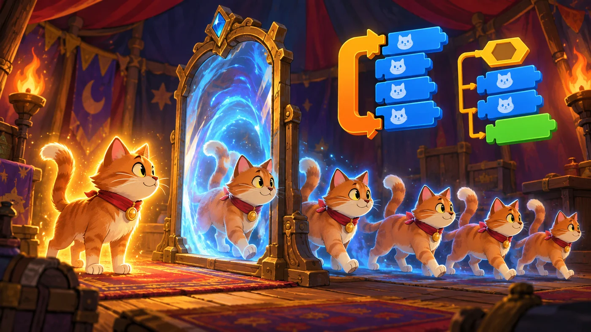
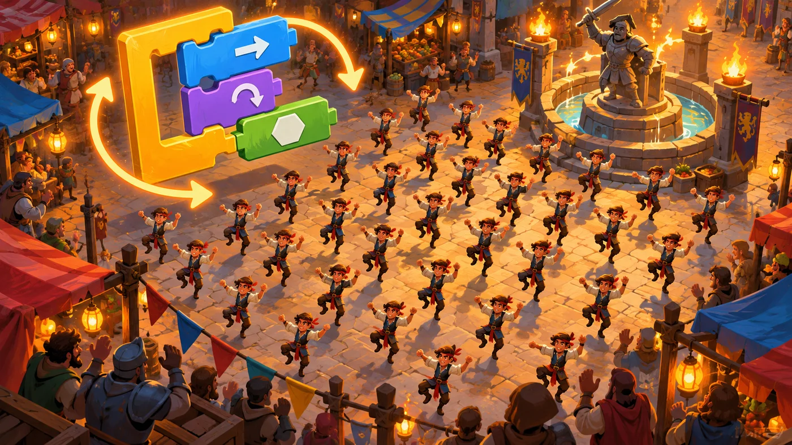

扣哒考级 · GESP 图形化 二级 · 第 4 单元 | 彩虹集市 RAINBOW BAZAAR
分身魔术摊 克隆
Cloning

安雅
红发队长 · 你的旅伴
魔术摊的帐篷帘子一掀，你先看到的是一面镜子。
一只小猫从左边走进去，镜子里走出一只一模一样的小猫； 它走到右边，镜子里又走出一只……三只、四只、五只，全长得一样。
安雅在旁边笑："这不是魔法，是克隆——机器复制的本事。"
一只小猫从左边走进去，镜子里走出一只一模一样的小猫； 它走到右边，镜子里又走出一只……三只、四只、五只，全长得一样。
安雅在旁边笑："这不是魔法，是克隆——机器复制的本事。"
安雅 · 红发队长
克隆说难也不难，就三块积木：克隆自己、当作为克隆体启动时、删除此克隆体。考试最爱考两句："克隆体执行哪一段脚本"和"克隆体会不会影响本体"。 把这两句想明白，克隆题就通了。
0 单元导语与目标
Before We Start
0.1 学习目标
- 理解克隆：让一个角色"复制"出许多个自己的分身；
- 掌握三块积木：克隆自己、当作为克隆体启动时、删除此克隆体；
- 分清本体与克隆体：它们各执行哪一段脚本；
- 会让克隆体出现在不同的位置、做不同的事；
- 知道克隆体不会自己消失，用完要删掉。
0.2 考纲对照
| 考纲知识块 | 考纲要求 | 本单元小节 |
|---|---|---|
| 3 克隆 | 克隆自己 / 角色、克隆体启动的设置、删除克隆体 | 1.1～1.2、2.1～2.3 |
| （知识点详述第 6 条） | 掌握克隆的概念，熟练控制当作为克隆体启动时的基本操作，灵活控制克隆体和本体 | 3.1～3.2、4.1～4.2 |
克隆是二级最有"魔法感"的一块。考试里最爱考两句： "克隆体有自己的位置和方向"、"克隆体用完要删掉"。
1 克隆是什么
What Is Cloning
1.1 本体与克隆体
魔术摊的帐篷里有一面镜子。一只小猫走进去，镜子里走出一模一样的复制品——' '一个、两个、三个。原来的那只叫本体，复制出来的叫克隆体。

assets/illustrations/scratch-L2-04-01_clone_tent.webp
【配图位】魔术帐篷里，一只小猫走到镜子前，多个一模一样的复制体依次走出，本体发出不同的光。（提示词见《GESP配图清单与AI绘图提示词》第四节 2-4）
打个比方：本体就像"印钞的模子"，克隆体是"印出来的钞票"——长得一模一样，但每一张都是独立的一张。你挪动其中一张，别的不会跟着动。
1.2 为什么要克隆
图 2（SVG）：为什么要用克隆
2 三块克隆积木
The Three Clone Blocks
2.1 克隆自己
在控制分类里能找到这一块。它执行一次，就复制出一个克隆体。
重点示例：复制三个分身
图形化积木
要点 "克隆自己"放在循环里执行 3 次，就得到 3 个克隆体；中间加一点等待，能看清它们依次出现
要记得一件事："克隆自己"执行一次就多一个分身，但它不会自动停。如果把它放进"一直重复"里，分身会源源不断冒出来，很快把舞台挤满。
2.2 当作为克隆体启动时
克隆体出生后，怎么知道该做什么？靠这一块帽子积木：
重点示例：每个分身出生后各自去做事
图形化积木
要点 这是一段只属于克隆体的脚本：本体不会执行它；每个克隆体一出生就各自跑一遍
2.3 删除此克隆体
重点示例：做完事就把自己删掉
图形化积木
要点 "删除此克隆体"只会删掉执行它的那一个，别的克隆体和本体都还在
为什么一定要删？克隆体不会自己消失。舞台上堆着几十个看不见的克隆体，既占内存又会让画面变乱。用完就删，是写克隆程序的好习惯。
3 本体和克隆体的区别
Clones vs the Original
3.1 谁执行哪段脚本
图 3（SVG）：本体与克隆体各管一段
3.2 克隆体的位置与方向
最容易考的一条：克隆体出生时，位置、方向、造型和当时的本体一模一样；但只要一执行"移到……"或"移动……"，每个克隆体都会按自己的路线走，互不影响。

assets/illustrations/scratch-L2-04-02_clone_crowd.webp
【配图位】集市广场上几十个一模一样的小角色同步跳着同一支舞，俯视构图，热闹多彩。（提示词见《GESP配图清单与AI绘图提示词》第四节 2-4）
4 克隆的常见用法
Common Uses of Cloning
4.1 一群一模一样的角色
图 5（SVG）：克隆的四种常见用法
4.2 别忘了删掉它们
图 6（SVG）：克隆体的一生
打个比方：克隆体就像临时请来的帮手——活儿干完了要记得让人家走。不删的话，台前台后攒着几百个帮手，程序很快就跑不动了。
5 代码实战
Level Practice
这一关要清掉一群一模一样的小东西——它们长得全一样， 用"克隆"来理解最直观。
关卡 94
螃蟹巢（Crab Nest）
进入关卡 →
故事：
集市的角落攒了一大群小虫，密密麻麻围成一片。它们长得一模一样，
一个挨着一个排成好几列。你要一排一排地清理过去。
思路：清理的动作用"重复执行"就能写：清一个、往前走一格，重复若干次。 清完一列，换个方向再清下一列——这就是上一单元学的"循环里套循环"。
重点示例：一排一排清过去
图形化积木
读法 内层"清 4 个"是一列；外层把"清一列 + 回到起点"做 3 遍
自己试一试：把内层循环换成"克隆 4 个分身，各清一个"——体会一下：什么时候用循环就够，什么时候非用克隆不可。
这一关用的是循环，但你可以想象一下：如果那群小东西是"不断刷出来"的，' 数量根本数不清，循环就写不出来了——那就必须用克隆。
什么时候必须用克隆？当"要几个"在写程序时说不准的时候。比如雪花一直落、子弹一直发——数量是运行时才决定，只能用克隆。
去扣哒世界闯这一关 →
6 常见陷阱
Common Traps
陷阱 1：把"克隆自己"放进"一直重复"里。分身会源源不断地冒出来，几秒钟就几百个，程序卡死。
正确做法：用"重复执行 N 次"限制数量，或者用"重复执行直到"控制时机。
正确做法：用"重复执行 N 次"限制数量，或者用"重复执行直到"控制时机。
陷阱 2：忘了写"当作为克隆体启动时"。克隆体出生后不知道该做什么，会和本体叠在一起一动不动。
正确做法：克隆体要做的事，都写进"当作为克隆体启动时"这一段。
正确做法：克隆体要做的事，都写进"当作为克隆体启动时"这一段。
陷阱 3：用完不删克隆体。它们会一直留在舞台上，越积越多。
正确做法：在克隆体脚本的最后加上"删除此克隆体"。
正确做法：在克隆体脚本的最后加上"删除此克隆体"。
陷阱 4：想用"停止全部脚本"来收摊。那是把整个作品都停了。
正确做法：只让克隆体自己退场，用"删除此克隆体"。
正确做法：只让克隆体自己退场，用"删除此克隆体"。
7 题目练习
Practice
前 2 题改编自 2026 年 9 月 · 图形化编程 二级 第 5 题、2026 年 6 月 · 图形化编程 二级 第 5 题，其余为原创练习题。
改编自 2026 年 9 月 · 图形化编程 二 级 · 第 5 题单选题
关于克隆体，下列描述正确的是（ ）。
A.克隆体不能移动，也不能改变外观
B.克隆体无法接收"广播"消息
C.一个角色最多只能克隆出 5 个克隆体
D.克隆体是原角色的独立副本，拥有独立的脚本和状态
B.克隆体无法接收"广播"消息
C.一个角色最多只能克隆出 5 个克隆体
D.克隆体是原角色的独立副本，拥有独立的脚本和状态
查看答案与详解
答案：D。克隆体出生时和本体一样，但它有自己的位置、方向、大小、特效这些"状态"，也照样能执行脚本、接收广播。
A 错：克隆体完全可以移动、换造型、变大小；
B 错：克隆体同样可以用"当接收到……"响应广播；
C 错：没有"最多 5 个"的限制，数量由你写几次"克隆自己"决定（写太多会让程序变卡）。
对应小节1.1、3.2 本体与克隆体。
A 错：克隆体完全可以移动、换造型、变大小；
B 错：克隆体同样可以用"当接收到……"响应广播；
C 错：没有"最多 5 个"的限制，数量由你写几次"克隆自己"决定（写太多会让程序变卡）。
对应小节1.1、3.2 本体与克隆体。
改编自 2026 年 6 月 · 图形化编程 二 级 · 第 5 题单选题
角色先执行"克隆自己"，然后每一个克隆体都执行"图章"一次，本体自己不做任何动作。
如果"克隆自己"一共执行了 4 次，舞台上最终能看到几只小猫（ ）。
如果"克隆自己"一共执行了 4 次，舞台上最终能看到几只小猫（ ）。
A.4
B.5
C.6
D.7
B.5
C.6
D.7
查看答案与详解
答案：B。这就是"1 + 4"的账：本体 1 只，克隆体 4 只，合起来舞台上有 5 只小猫。
最容易错的地方：忘了把本体算进去——"克隆自己"不是"把自己换掉"，而是"多做一个"。
A 错：只算了克隆体，漏掉本体；
C、D 错：把克隆次数或本体重复算了。
对应小节2.1 克隆自己。
最容易错的地方：忘了把本体算进去——"克隆自己"不是"把自己换掉"，而是"多做一个"。
A 错：只算了克隆体，漏掉本体；
C、D 错：把克隆次数或本体重复算了。
对应小节2.1 克隆自己。
原创练习题单选题
魔术摊里的小猫执行了三次"克隆自己"。关于舞台上出现的小猫，下列说法正确的是（ ）。
A.舞台上一共出现 4 只猫：1 个本体 + 3 个克隆体
B.舞台上一共出现 3 只猫，本体消失了
C.克隆出来的猫和本体没有区别，连位置也永远绑定在一起
D.克隆体不能被删除
B.舞台上一共出现 3 只猫，本体消失了
C.克隆出来的猫和本体没有区别，连位置也永远绑定在一起
D.克隆体不能被删除
查看答案与详解
答案：A。"克隆自己"是复制出一个新的，本体不会消失，所以是 1 + 3 = 4 只。
B 错：本体一直都在；
C 错：克隆体出生的那一刻位置和本体一样，但之后可以各自移动，互不影响；
D 错："删除此克隆体"就是专门删克隆体的积木。
对应小节2.1 克隆自己；3.2 位置与方向。
B 错：本体一直都在；
C 错：克隆体出生的那一刻位置和本体一样，但之后可以各自移动，互不影响；
D 错："删除此克隆体"就是专门删克隆体的积木。
对应小节2.1 克隆自己；3.2 位置与方向。
原创练习题单选题
克隆体出生后，会自动执行下面哪一段脚本（ ）。
A.当绿旗被点击那一段里的积木
B.当作为克隆体启动时那一段里的积木
C.所有角色身上的全部脚本
D.什么也不执行
B.当作为克隆体启动时那一段里的积木
C.所有角色身上的全部脚本
D.什么也不执行
查看答案与详解
答案：B。克隆体出生时绿旗早就点过了，所以"当绿旗被点击"这一段不会为它重新执行；它执行的是专门写给克隆体的"当作为克隆体启动时"。
A、C 错：都扩大了范围；
D 错：只要写了那段脚本，克隆体一出生就会执行它。
对应小节3.1 谁执行哪段脚本。
A、C 错：都扩大了范围；
D 错：只要写了那段脚本，克隆体一出生就会执行它。
对应小节3.1 谁执行哪段脚本。
原创练习题单选题
小雪花从屏幕上方不断落下，落到地面后就不见了。要让"不见"这件事发生，应该在克隆体的脚本里加哪一块积木（ ）。
A.隐藏
B.停止全部脚本
C.删除此克隆体
D.移到 x: 0 y: 0
B.停止全部脚本
C.删除此克隆体
D.移到 x: 0 y: 0
查看答案与详解
答案：C。"删除此克隆体"让这一片雪花彻底退场，不再占资源，也不影响别的雪花。
A 错：隐藏只是看不见，克隆体还在，越积越多；
B 错：那会把整个作品的脚本都停掉；
D 错：移回原点只会让雪花重新出现在上面。（如果只是移回去，还得多加别的处理）
对应小节2.3 删除此克隆体。
A 错：隐藏只是看不见，克隆体还在，越积越多；
B 错：那会把整个作品的脚本都停掉；
D 错：移回原点只会让雪花重新出现在上面。（如果只是移回去，还得多加别的处理）
对应小节2.3 删除此克隆体。
原创练习题多选题
下面哪些情形适合用克隆来实现（ ）。
A.天上不断落下、数量不固定的雪花
B.固定三个、位置不变的角色
C.按一次键就发射一颗、数量由玩家决定的子弹
D.屏幕上整齐排列的一大片格子
B.固定三个、位置不变的角色
C.按一次键就发射一颗、数量由玩家决定的子弹
D.屏幕上整齐排列的一大片格子
查看答案与详解
答案：A、C、D。它们的共同点是"要很多个长得一样的东西，而且数量在写程序时不好确定（或写起来太啰嗦）"。
B 错：只有三个、位置还固定，直接在角色区添加三个角色更简单，不需要克隆。
对应小节1.2、4.1 为什么要克隆。
B 错：只有三个、位置还固定，直接在角色区添加三个角色更简单，不需要克隆。
对应小节1.2、4.1 为什么要克隆。
原创练习题判断题
在图形化编程中，删除一个克隆体时，舞台上的本体也会一起消失。（ ）
查看答案与详解
答案：错误（×）。"删除此克隆体"只会删掉执行它的那一个克隆体，本体和别的克隆体都还在。
要区分的是：克隆体之间互不影响，克隆体也不影响本体。
对应小节2.3、3.2 本体与克隆体。
要区分的是：克隆体之间互不影响，克隆体也不影响本体。
对应小节2.3、3.2 本体与克隆体。
8 本单元小结
Unit Summary

贺舒曼 · 镜中先知
镜子照出一个，帐篷里就多一个。克隆的三块积木要记牢：
克隆自己、当作为克隆体启动时、删除此克隆体。再记住那句话：克隆体有自己的位置和方向，用完要删掉—— 二级卷子上的克隆题，基本就围着这两句转。
你在魔术摊里学到了什么
- 本体与克隆体：本体被复制出克隆体，克隆体长得和本体一样；
- 三块积木：克隆自己、当作为克隆体启动时、删除此克隆体；
- 谁执行哪段：克隆体执行"当作为克隆体启动时"，本体执行"当绿旗被点击"；
- 位置独立：克隆体出生时位置相同，之后各走各的、互不影响；
- 用完要删：克隆体不会自己消失，留着会越积越多。
下一站：彩绘师
下一单元换一种玩法：不再让角色跑来跑去，而是让它边走边留下痕迹—— 像一支笔在纸上游走。这就是画笔模块。